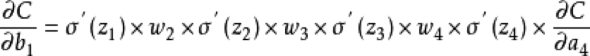
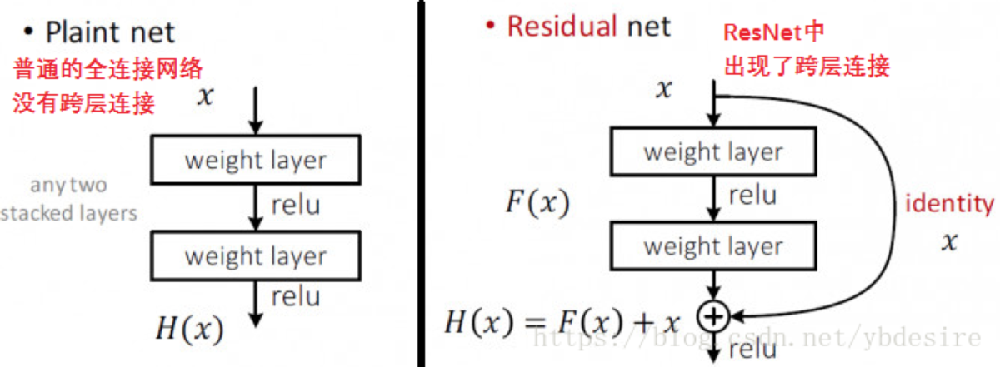
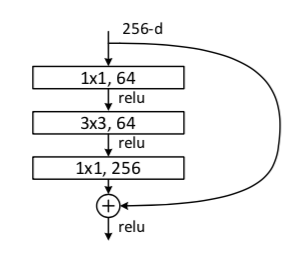

『Xu』Deep Residual Learning for Image Recognition
很久之前看的ResNet，现在对它粗略的整理一下。
Link: ResNet
首先在训练层数很深的神经网络的时候会存在两个问题。
- $Q_1:$ 梯度爆炸 / 梯度消失 「Gradient Exploding / Gradient Vanishing」
在back propagation中链式法则求导的公式如下所示

$\sigma^{‘}$表示的是对激活函数的求导，激活函数可以是sigmoid以及更常用的ReLU，其中对于sigmoid求导的最大值是1/4，而对于relu求导的最大值是1，同时权重$w$是通常是通过正态分布的方式产生的，所以$w$的值大多数分布在0附近，从而导致$\prod{w}$的值很小，从而出现了梯度消失的现象。而如果恰好$w$的值比较大(相比于1)，那么就会导致$\prod{w}$出现爆炸的现象。
但是这个问题已经被「Batch Normalization」解决了。通过对每一层的参数进行Normalize，利用标准差$\sigma$来scale对应的权重，使得小的权重变大，大的权重变小，从而缓解了梯度消失或者是梯度爆炸的现象。
More details: https://www.zhihu.com/question/38102762/answer/391649040
- $Q_2:$ 随着网络层数的增加，网络的效果急速下降 「Degradation」
这是一位违反直觉「Counterintuitive」的现象：
经过大量的实验证明，对于普通的网络「Plain Network」，如果存在一个已经训练好的最优网络(结构和参数都已经确定)，若再继续堆叠网络神经元，那么会导致整个网络的表现变得更差，但是子网络的Output Space应该是父网络的Output Space的子集，因为只需要将剩下的层改为恒等变化「即输入等于输出」，也就是说继续堆叠后的网络的Output Space中应该至少存在与先前最优网络相同的解，只是无法训练得到。
观察Fig.1的左边的网络，如果由浅层网络输出的结果x已经达到了最优解，那么只需要将接下来的两层神经层训练为Identity Map，即恒等变换就可以保证输出的结果不会变差，但是实际上出现的现象就是，堆叠更多的网络层会导致Degradation。「作者在论文中一开始是认为，更深的网络由于其梯度下降的比较慢所以使得效果变差，因此尝试利用3倍的迭代次数进行训练，但是效果仍然没有变好，因此他认为不能将这个问题简单地归咎于梯度下降速度慢。」
面对这个Degradation的现象，作者认为两层网络拟合一个Identity Map的难度比较大，因此作者放弃了拟合恒等变换而拟合残差「Residual」F(x)=H(x)-x，如果浅层的输出x真的已经达到了最优，那么只需要让新堆叠的网络层拟合全0的输出(F(x)=0)即可，而拟合全0相比于拟合一个恒等变换的难度大大减小。在真实的情况中，往往并不会真正只要求一个恒等变换，但是由于在深层网络中前面几层的网络已经拟合了大部分内容，而后面叠加的新网络只需要对前面的输出学习一些比较小的扰动「Perturbations」即可，因此这个学习也是比较容易的。
所以作者建立了一个如图Fig.1 右边所示的block，将浅层网络的输出直接通过skip connection直接送到后面。

整个Residual Block的优点如下所示
- 使整个网络训练更敏感，对细节更敏感
在plain network中，学习的目标是函数H，例如需要学习的是H(5) = 5.1，但是在Residual Network中，需要学习的是函数F(也就是残差 Residual，因为目标是H(x)，已拥有x，那么残差就是F(x) = H(x) - x)，所以需要学习F(5) = H(5) - 5 = 0.1。现在考虑如果学习目标变化为H(5) = 5.2，那么在Plain Network中造成的变化是2%，而在Residual Network中学习F(5) = 0.2，变化了100%，所以Residual Network对变化更敏感。
- 使整个网络训练更敏感，对细节更敏感
- 更容易学习
从数学上来说，论文作者简单地比较了残差结构和常规结构在求解本征映射(identity map)时的优化难度，显然求解F(x)=0比求解H(x) = x容易得多。也就是说，假设已有的浅层网络结构已经最优化，我们的目标只要使堆叠的深层网络是个identity network即可，所以在Plain Network中是需要H(x) = x，而Residual Network则只需F(x)=0。
- 更容易学习
- 解决了梯度消失/爆炸
我们可以知道ResNet的可以简单的表示为如下所示
$$
x_{l+1}=x_l+F(x_l, Wl)
$$
其中$x{l+1}$/$x_l$分别表示的是第$l$层的输出以及输入，那么对于并不相连的第$L$层以及$l$层，对应学习的特征可以表示为
$$
xL = x{L-1}+F(x{L-1}, W{L-1})=x{L-1} + x{L-2}+F(x{L-2}, W{L-2})=xl+\sum{i=l}^{L-1}F(x_i, W_i)
$$
接下来在反向梯度求导的过程中，当最后的loss在$x_l$处求导，可得
$$
\frac{\partial loss}{\partial x_l}=\frac{\partial loss}{\partial x_L}·\frac{\partial x_L}{\partial x_l}=\frac{\partial loss}{\partial x_L}·\frac{\partial (xl+\sum{i=l}^{L-1}F(x_i, W_i))}{\partial x_l}=\frac{\partial loss}{\partial x_L}·(1+\ …)
$$
上面这个式子没有写全，但是我们可以看到求出的导数是在L层的导数乘上括号内的数，存在一个1，就表示L层的梯度可以直接无损地向后传播。
- 解决了梯度消失/爆炸

BOTTLENECK
当我们更加细致的观察ResNet的细节的时候，我们能够发现ResNet中还使用了一个「Bottleneck」模块，如上图所示，充分地利用了单位卷积核，输入数据的维数（如原先是256维）先被减少（变为64维），然后使得一个size比较大的卷积核能够在比较小的维度上进行操作，然后再利用一个单位卷积核将减小的维度（64维）重新放大到原来的样子（256维）。从而能够在处理更加大的维度的特征的同时，保持一个比较小的计算时间。